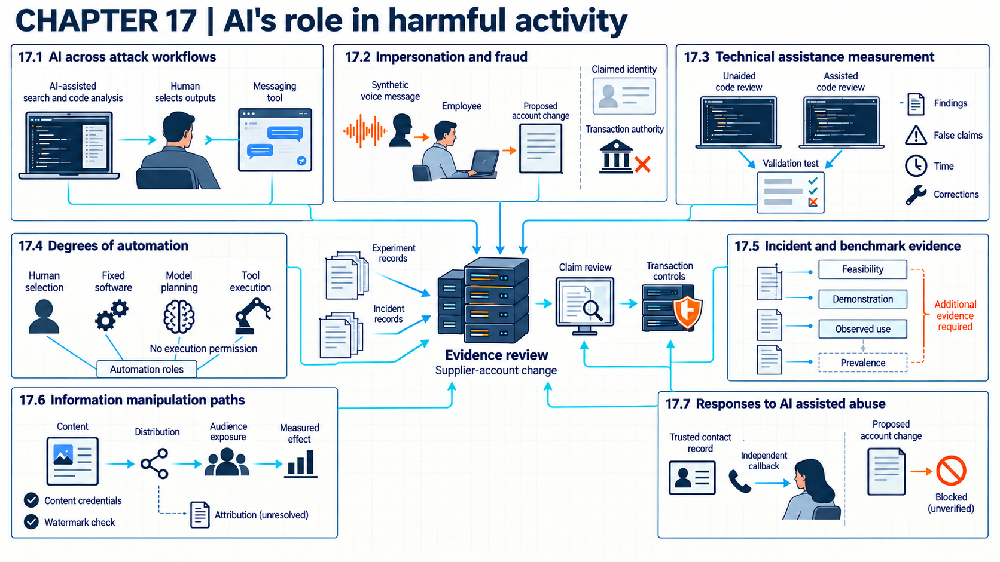

17 AI-assisted attacks
Different evidence supports capability, observed AI use, prevalence, and measured improvement, guiding controls for verified attack paths.
When a fraud or intrusion report says an attacker “used AI,” the organization still has to decide what to change. The phrase may mean that a model drafted one message, or that software chose and ran every step. The first case directs attention to the process that accepted the message. For the second, investigators also need measurements of action speed and human oversight. Treating every mention of AI as proof of a new capability sends defensive effort to the wrong place.
Suppose an organization’s finance team receives a call in a synthetic voice asking an employee to change a supplier’s bank account. The attacker supplies the false identity, the employee acts on the request, and the payment system moves the money. The Arup video call, told below, shows that this path can end in large payments. Whether AI made such an attack faster, larger, or newly possible is a separate question. A successful laboratory test, a recorded incident, an estimate of frequency, and a measured improvement answer different questions. Each needs its own evidence.

17.1 AI roles in attacks
Finding AI somewhere in an intrusion does not show that it changed the attack. Assessment starts by locating its role in reconnaissance, vulnerability work, social engineering, code generation, operations, or analysis of stolen data. The evidence then distinguishes simple assistance from higher speed, scale, quality, success, or a capability that was otherwise unavailable.
An evidence class states what kind of claim a record can support. Feasibility means a mechanism can work under specified conditions. A controlled demonstration shows it working in a test. An observed incident records operational use. Prevalence estimates how often it occurs in a defined population and time period, so it needs a sampling method and a denominator.
A measured effect is an outcome difference assessed against a relevant comparison. For attacker assistance, uplift means an improvement attributable to that assistance relative to a comparable baseline without it. These are different questions, not a single ranking: one incident can show use without showing uplift, and a controlled experiment can estimate uplift without showing how common use is. Attack evidence and claim limits applies these distinctions to source reports.
The UK National Cyber Security Centre (NCSC)1 places AI use across several intrusion activities in its highest likelihood band in its May 2025 assessment. The activities include reconnaissance, exploit development, social engineering, basic malware generation, and processing of exfiltrated data. NCSC2 expects near-term growth mainly through existing tactics, techniques, and procedures. This probabilistic intelligence assessment covers the period through 2027 without supplying a controlled experiment or incident count.
For each claim, the organization records the task, model access, human input, tools, baseline, output, and observed operational result. “AI assisted reconnaissance” is weaker than evidence that it found more valid targets in less time under the same conditions. This common evidence frame supports the impersonation, programming, automation, and incident examples that follow.
Example
Concrete role assessment. The operating mode is retrospective review of an intrusion report. The reported task was finding public employee contact details. The actor supplied search terms to an external model and manually selected results. An ordinary mailing tool then sent the messages. The report contains model transcripts and sent-message records but no comparison with unaided research.
The records show model assistance during information synthesis and human control over selection and sending. They do not show faster discovery or more valid contacts. They also leave autonomous operation and any new capability unsupported. The conclusion is limited to observed assistance in one stage. The roles and records in this assessment are invented for teaching.
A reviewer accepts a capability statement only after checking the task, model access, human steps, baseline, measured result, and missing records. The count covers every assessed intrusion stage, with supported, unsupported, and unknown AI effects kept apart. Detailed review takes analyst time and needs access to sensitive records. Incomplete reporting, or selecting only successful episodes, can defeat the comparison. The reviewer narrows or withdraws the claim while requesting missing evidence, then repeats the assessment when it arrives. An accepted role claim still does not establish improvement or prevalence.
17.2 Deepfake fraud
An employee of the engineering firm Arup made 15 transfers totaling HK$200 million, about US$25.6 million, in January 2024 after a video call that used deepfakes. The South China Morning Post3 confirmed on May 17, 2024, that Arup was the victim, citing police and Arup statements. An attempt against WPP, reported on May 10, 2024, used a cloned voice and YouTube footage in a Microsoft Teams call aimed at an agency leader, and it failed (AI Incident Database4). That account comes from news reports only, and it describes a voice clone and existing footage, not a live face swap. Both attempts used synthetic media, but only the Arup call ended in payments, so assessment follows each claim into the process that accepted or refused it.
Impersonation presents a false identity to induce someone to accept it. An unsuccessful attempt is still impersonation. Generated text, voice, image, or video can increase realism or scale. Harm can follow when a person or system accepts the false identity and authorizes a payment, discloses sensitive data, or changes access. Assessment keeps the synthetic content and the transaction path separate.
The FBI5 reported a campaign beginning in April 2025 that used text messages and AI-generated voice messages while impersonating senior United States officials. The FBI6 recommends independent verification through a known contact method instead of relying on the received message. The alert documents one campaign and advice. It does not estimate prevalence or measure a verification control’s effectiveness.
In the example organization, the synthetic voice tells the employee to change the supplier’s account. The defensive trace records the claimed identity and the channel the request came through. It then records the requested transaction, the independent callback, and the authorization result. The transaction service enforces the decision. It checks the account, the requested change, the callback result, the current approver, and a second approval where required. Even perfect media detection would leave this process exposed to ordinary impersonation, so the AI claim and the process failure need separate evidence.
A test of this control reports two rates. One is blocked impersonation attempts over all eligible attempts. The other is legitimate changes delayed or rejected over all valid requests. The callback adds time and can slow urgent work. A compromised verification channel or collusion can get around it. Recovery then freezes the change, reverses the transaction where possible, and resets affected access before verification runs again. One blocked attempt does not measure general effectiveness or prove that the content was synthetic.
17.3 Measuring attacker uplift
Wiz7 reported on August 26, 2025, that attackers had published malicious versions of the Nx package on npm, the JavaScript package registry, in a campaign called s1ngularity. The malicious code called AI command-line coding tools already installed on victims’ machines and asked them to search for secrets. Those tools did what their permission flags allowed, and counts of stolen credentials vary between security vendors. The case shows AI tools used inside an attack. It does not measure whether they found more secrets than an ordinary search script would have. That comparison is the uplift question, and it needs a baseline.
Programming and analysis assistance can help with code generation, translation, debugging, vulnerability research, exploit work, and interpretation of large data sets. A capability claim needs a defined task and a baseline with comparable access, time, skill, and success criteria. Output volume alone does not establish useful attacker progress.
The NCSC assessment8 includes vulnerability research, exploit development, basic malware generation, and data processing among activities that AI can assist. Pearce et al.9 found vulnerable suggestions in some scenarios tested with an early GitHub Copilot version. The first source lacks controlled task baselines, while the second studied defensive code quality rather than attacker productivity.
A useful experiment compares people working with the assistant against people working without it on matched eligible tasks. Other tools, data access, time limits, and success rules stay comparable, and assignment balances participant skill. The assistant is the intended difference. Its model version and access settings are fixed in the assisted condition. It then measures valid findings, time, false claims, required correction, and end-to-end success. No public study cited in this chapter reports such a controlled measure of attacker uplift, so its size remains unknown. Chapter 14 (Evidence for release decisions) explains the evaluation methods behind such a comparison. Clear task evidence is also needed before describing the work as automated.
Example
Worked evidence assessment. Suppose four participants evaluate eight synthetic code-analysis tasks, each with a planted defect and a fixed validation test. Every task is attempted once with an assistant and once without one, by different participants. Each participant completes two tasks in each condition and never sees the same defect twice. Task and condition order are balanced as far as this small design allows. This produces eight task attempts per condition. The assistant uses fixed model parameters to analyze code in an isolated test environment. The evaluator checks its findings against the planted defects and validation tests. The evaluation does not train the model or act on operational systems.
The table sums participant working minutes over all eight attempts in each condition. Total time includes time spent correcting false claims. Correction time is shown as a subset of that total and must not be added again.
| Condition | Valid defects found | Total participant minutes (including correction) | False claims | Correction minutes within total |
|---|---|---|---|---|
| unaided | 5 of 8 | 64 minutes | 1 | 4 minutes |
| assistant | 6 of 8 | 46 minutes | 3 | 15 minutes |
The assisted condition has one additional valid finding and uses 18 fewer participant minutes: 64 minus 46. It also produces two additional false claims and needs 11 more correction minutes: 15 minus 4. Those correction minutes are already included in the totals. The observed difference supports further testing of assistance, but this small exercise cannot reliably separate its effect from participant differences and task order. The participants and synthetic defects may also differ from real attacks. All values are invented for teaching.
An uplift claim needs matched eligible tasks, comparable access apart from the assistant, common validation tests and outcome rules, and an assignment method that addresses participant and order effects. Results cover all assigned tasks and participants and report valid findings, false claims, total participant time, and its correction-time subset separately. Such a comparison consumes expert time and can reveal sensitive techniques. Learning effects, task mismatch, or selective reporting can break the inference. The claim is then withdrawn and the design corrected before the comparison runs again. Even a measured difference does not establish operational harm.
17.4 Attack automation and human control
Anthropic10 reported on November 13, 2025, that a group it calls GTG-1002 used Claude Code for intrusion attempts against about 30 organizations, with substantial automation and some human decisions. Its report also describes false credentials and mistaken claims of secret-data extraction. These are the provider’s observations and interpretations, not an independently reconstructed record in this guide. In ShadowRay 2.0, introduced in Chapter 9 (Runtime intrusion and resource abuse), Oligo11 inferred possible language-model use from features of the payload code. Code style does not establish how the attack was controlled. The degree of automation therefore needs a separate trace of who chose and executed each step.
Automation has observable steps. A person may request and select each output. A fixed script may repeat preset operations, while a model may choose a sequence. A tool loop may change that sequence after observing results. Claims of autonomy become specific only when they identify who sets the goal and chooses actions. They also identify who supplies credentials and reviews results. The stopping authority is recorded separately.
MITRE ATLAS12 labels technique evidence as Feasible, Demonstrated, or Realized. The NCSC assessment13 distinguishes AI assistance across intrusion stages but does not define a general automation scale. ATLAS maturity concerns evidence for a technique rather than the level of agent control. These sources do not support a precise universal autonomy taxonomy.
A descriptive trace therefore keeps separate records for human selection, fixed automation, model planning, tool execution, and adaptation. A system can plan without permission to act, or run a fixed script without model planning. For each consequential step in the reported workflow, the reviewer records who set the goal and selected the action. The trace also records who supplied credentials, approved effects, observed results, and stopped the sequence. Each step is marked as human, fixed-software, model-selected, or unknown control, and the automation label may go no higher than these records support.
Detailed tracing costs storage and investigative time. Missing tool logs or hidden human intervention can make the classification wrong. When records are missing, the claim drops to the strongest supported level while the reviewer seeks them. A complete trace lets benchmark and incident reports state exactly what occurred, but it does not establish greater capability or success.
17.5 Attack evidence and claim limits
Anthropic14 reported on April 7, 2026, that Mythos Preview produced working exploits in 181 attempts against previously found vulnerabilities in Firefox 147’s JavaScript engine. Opus 4.6 had succeeded twice in the earlier experiment. The vulnerabilities had been patched in Firefox 148. These counts describe successful attempts, not 181 distinct new vulnerabilities. The cited source set supplies no independent replication of this comparison. The report supports a capability demonstration under the vendor’s conditions, not an estimate of attacker use or operational harm.
The evidence classes defined in AI roles in attacks separate this demonstration from operational use. MITRE ATLAS15 uses Feasible, Demonstrated, and Realized for technique maturity. Those labels help describe supporting evidence, but they do not measure either prevalence or attacker uplift.
The FBI campaign alert16 records operational use of AI-assisted impersonation without establishing its frequency. The NCSC report17 instead gives assessed likelihoods and a forecast horizon. Combining one alert with an intelligence assessment cannot create a prevalence estimate. Attribution links activity to an actor or system with stated confidence. It needs its own supporting records, separate from evidence that a technique works.
An evidence record captures source type, access and task conditions, model or tool version, baseline, observed result, reporting incentives, and uncertainty. A vendor demonstration may establish feasibility. A first-party incident report may establish observed use but still omit attribution detail. Keeping these questions separate prevents a laboratory result from becoming a claim about common operational harm and sets the standard for information-manipulation claims.
The reviewer records which claims a source supports only after checking its conditions and direct observations. A source may support more than one kind of claim, with different limits for each. The count covers every report assessed for the claim in the defined population. Accepted, rejected, duplicate, and incomplete sources are kept apart, and collection methods are recorded. Collection and verification take analyst time, and strict admission can leave timely questions open. Publication bias, missing or unknown incidents, and copied reporting can distort the evidence set. When they do, the label changes and unsupported synthesis is retracted. Even after the collection is refreshed, several accepted incidents do not make a prevalence estimate without a defined population and denominator.
17.6 Synthetic influence campaigns
OpenAI18 reported on May 30, 2024, that it had disrupted five influence operations that used its models. It rated their spread using the Breakout Scale, an ordered campaign-spread rating from 1, the lowest category, to 6, the highest. None scored above 2. OpenAI described category 2 in this assessment as activity across several platforms without reaching audiences outside the operation. This describes observed spread, not a measured change in audience beliefs or behavior. The ratings remain the company’s judgment, not an independent audience study. The report therefore supports some links of an influence claim and leaves audience effects unmeasured.
Information manipulation involves more than producing synthetic content. A complete claim connects content generation, coordinated distribution, audience exposure, measured effect, and attribution. Evidence for one link cannot silently stand for the others. Source verification also differs from judging whether the content changed beliefs or behavior.
The NCSC cyber-threat assessment19 explicitly excludes influence operations from its scope. MITRE ATLAS20 can organize technique and case evidence but cannot establish audience effect or campaign attribution by itself. Neither source therefore supports a prevalence or behavioral-effect claim about information manipulation.
The organization records each link as supported, disputed, or unknown and keeps platform observations separate from claims about human effect. Synthetic content may be confirmed while coordination and attribution remain uncertain.
Content authentication binds statements about a file’s origin or edit history to the file so that a validator can check them. C2PA Content Credentials use signed claims and content bindings for this purpose (C2PA Technical Specification21). They can support a statement about the signer and recorded history, but they can be absent or removed and do not establish that the depicted event is true.
Statistical watermarking changes generation probabilities to leave a detectable pattern. In the method of Kirchenbauer et al.22, a participating operator changes token sampling without retraining the model.
Example
From generation to detection. Suppose a participating service drafts a public notice. Its generator uses the previous token to reproducibly divide its vocabulary into subsets. It raises the scores of the subset called the green list before sampling, then repeats. Other tokens remain possible. A detector receives the notice, recreates each subset, and counts green-list selections. The detector compares the excess with a threshold, using the vocabulary fraction to set the chance expectation for text produced without the rule. Repeated token pairs need special handling to avoid counting the same evidence repeatedly.
The detector needs matching tokenization and partition settings, but no model weights or generation API. A private scheme also requires its key or access to its detection service.
Conclusion. This tests participation in one watermark scheme. Sampling settings affect quality and detection. Short, predictable, or edited text can weaken the signal. Nonparticipating generators supply no intended signal, so absence cannot establish human authorship.
Signed history answers who signed recorded claims about the file. A watermark tests a pattern in its text. The two forms of evidence may coexist, but neither establishes campaign intent, distribution, or audience effect.
A claim about a whole campaign’s effect is accepted only when evidence covers content, distribution, audience exposure, measured response, and attribution under stated criteria. Its denominator is the defined exposed population, not the number of collected posts. Such measurement is costly, raises privacy concerns, and often arrives after the response decision. Activity outside the platform, weak sampling, or correlated reporting can undermine the study. Where a link fails, the claim narrows or is withdrawn, and controls are updated from the links that remain supported. Research that measures generation, distribution, exposure, effect, and attribution together is still needed. Defensive work can proceed from verified failure paths without waiting for every broader campaign claim to be settled.
17.7 Controls for verified attack paths
A defensive response targets the verified path by which harm occurs. Identity and transaction verification can reduce impersonation risk without identifying whether media was generated. Rate limits, reporting channels, account controls, and detection rules address other observed steps. The response record links each control to the evidence and outcome it is expected to change.
The FBI23 recommends verifying identity through an independently identified contact method and confirming requests for money or sensitive information before acting. The NCSC24 expects much near-term AI impact to use existing intrusion methods. Applying controls to those existing paths follows from that assessment. It does not compare the measured performance of defensive products.
The supplier-change control and its blocked-attempt and valid-request delay measures are described in Deepfake fraud. Here the review extends that control to the records and recovery routes on which it depends.
Besides collusion, two weak points need their own tests: a compromised contact record, and an account recovery process with weaker checks than the payment path. If either fails, recovery freezes affected accounts and reverses supported changes, then resets verification channels before the route is reviewed. A passing result does not measure media detection or stop abuse through a different business process. New evidence can change control priority without changing the basic asset and authorization analysis. Chapter 18 (Evaluating AI for defense) applies the same evidence rules to an AI assistant used by the defensive team.
Note
Chapter checkpoint. A report states that an attacker “used AI autonomously” in a fraud attempt. The available records show that a person prompted a model and selected one generated message. The person sent it through an ordinary account, and the attempt failed when the employee used an independent callback. What can the organization conclude?
Answer. Human-directed generation assistance and the observed impersonation attempt are the strongest supported claims. Model-selected goals and tool execution remain unsupported. Prevalence and improvement against an unaided baseline remain unmeasured. The failed transaction shows that the independent callback protected this case, while one case cannot measure the control’s general effectiveness. The assessment should preserve those supported and unsupported claims separately.
Public evidence still leaves attacker productivity, automation levels, influence effects, and defensive effectiveness uncertain.
UK National Cyber Security Centre (2025, May 7), Impact of AI on Cyber Threat from Now to 2027, NCSC assessment, “Assessment,” and “AI impact on stages of cyber intrusion to 2027,” source.↩︎
UK National Cyber Security Centre (2025, May 7), Impact of AI on Cyber Threat from Now to 2027, NCSC assessment, “Assessment,” source.↩︎
South China Morning Post (2024, May 17), “UK multinational Arup confirmed as victim of HK$200 million deepfake scam that used digital version of CFO to dupe Hong Kong employee,” South China Morning Post, source. The report relies on police and company statements and gives no technical account of how the synthetic media was made.↩︎
AI Incident Database, “Incident 983: Scammers Reportedly Used AI Voice Clone and YouTube Footage to Impersonate WPP CEO in Unsuccessful Scam Attempt,” AI Incident Database, incident reported May 10, 2024, source. The entry collects news reports and adds no independent investigation of the call.↩︎
Federal Bureau of Investigation (2025, May 15), Senior U.S. Officials Impersonated in Malicious Messaging Campaign, Alert I-051525-PSA, “Specific Campaign Details,” source.↩︎
Federal Bureau of Investigation (2025, May 15), Senior U.S. Officials Impersonated in Malicious Messaging Campaign, Alert I-051525-PSA, “Recommendations,” “Spotting a Fake Message,” and “How to Protect Yourself from Potential Fraud or Loss of Sensitive Information,” source.↩︎
Wiz (2025), “s1ngularity: supply chain attack leaks secrets on GitHub: everything you need to know,” Wiz Blog, August 26, source. The post describes the malware’s behavior and has no controlled comparison with a search that did not use AI tools.↩︎
UK National Cyber Security Centre (2025, May 7), Impact of AI on Cyber Threat from Now to 2027, NCSC assessment, “Assessment,” and “AI impact on stages of cyber intrusion to 2027,” source.↩︎
Hammond Pearce, Baleegh Ahmad, Benjamin Tan, Brendan Dolan-Gavitt, and Ramesh Karri (2022), “Asleep at the Keyboard? Assessing the Security of GitHub Copilot’s Code Contributions,” 2022 IEEE Symposium on Security and Privacy, 754-768, DOI. Author manuscript arXiv:2108.09293, author-manuscript sections III-V and section VI, “Threats to Validity,” PDF pp. 3-14, author manuscript.↩︎
Anthropic (2025, November 13), “Disrupting the first reported AI-orchestrated cyber espionage campaign,” Anthropic, source. This is a self-report by the model’s provider. The guide does not independently validate the claimed division of work between people and software.↩︎
Oligo Security (2025, November 18), “ShadowRay 2.0: Active Global Campaign Hijacks Ray AI Infrastructure Into Self-Propagating Botnet,” Oligo Security blog, source. The judgment that a language model wrote the payloads is an inference from the code, not a confirmed finding.↩︎
MITRE (live knowledge base, retrieved September 16, 2026), Adversarial Threat Landscape for Artificial-Intelligence Systems (ATLAS), technique maturity field; the official ATLAS output schema,
definitions.technique.properties.maturity, listsfeasible,demonstrated, andrealized, source.↩︎UK National Cyber Security Centre (2025, May 7), Impact of AI on Cyber Threat from Now to 2027, NCSC assessment, “Context,” and “Assessment,” source.↩︎
Anthropic (2026, April 7), “Claude Mythos Preview’s cybersecurity capabilities,” Anthropic, source. The developer reports successful exploit attempts in the Firefox 147 benchmark, not a count of distinct new vulnerabilities. The source set cited here contains no independent replication of that comparison.↩︎
MITRE (live knowledge base, retrieved September 16, 2026), Adversarial Threat Landscape for Artificial-Intelligence Systems (ATLAS), technique maturity field in the official ATLAS output schema,
definitions.technique.properties.maturity, source.↩︎Federal Bureau of Investigation (2025, May 15), Senior U.S. Officials Impersonated in Malicious Messaging Campaign, Alert I-051525-PSA, “Specific Campaign Details,” source.↩︎
UK National Cyber Security Centre (2025, May 7), Impact of AI on Cyber Threat from Now to 2027, NCSC assessment, “Context,” and “Assessment,” source.↩︎
OpenAI (2024, May 30), “Disrupting deceptive uses of AI by covert influence operations,” OpenAI, paragraph immediately before “Attacker trends,” including the scale range and category-2 description, source. The ratings and the category description here are OpenAI’s assessment of the disclosed operations.↩︎
UK National Cyber Security Centre (2025, May 7), Impact of AI on Cyber Threat from Now to 2027, NCSC assessment, “Context,” explicit exclusion of influence operations, source.↩︎
MITRE (live knowledge base, retrieved September 16, 2026), Adversarial Threat Landscape for Artificial-Intelligence Systems (ATLAS), technique, case-study, and maturity fields in the official ATLAS output schema, source.↩︎
Coalition for Content Provenance and Authenticity (2025), C2PA Technical Specification, version 2.2, May 2025, sections 1.2-1.3, 14.2-14.3, and 15.12, source.↩︎
John Kirchenbauer, Jonas Geiping, Yuxin Wen, Jonathan Katz, Ian Miers, and Tom Goldstein (2023), “A Watermark for Large Language Models,” Proceedings of ICML, PMLR 202, 17061-17084. Sections 2-3.1, Algorithm 2 and equation (3), PDF pp. 2-4; section 5, p. 5; section 6 and Appendix B, especially “Evaluating Repetitive Text,” pp. 18-19, published paper. Construction, access assumptions, and detection limits refer to this scheme. Experiments use OPT-family models.↩︎
Federal Bureau of Investigation (2025, May 15), Senior U.S. Officials Impersonated in Malicious Messaging Campaign, Alert I-051525-PSA, “Recommendations,” and “How to Protect Yourself from Potential Fraud or Loss of Sensitive Information,” source.↩︎
UK National Cyber Security Centre (2025, May 7), Impact of AI on Cyber Threat from Now to 2027, NCSC assessment, “Assessment,” source.↩︎